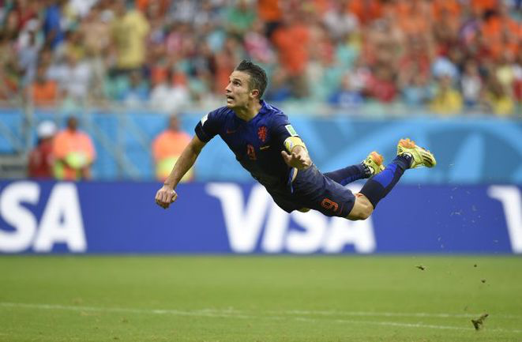
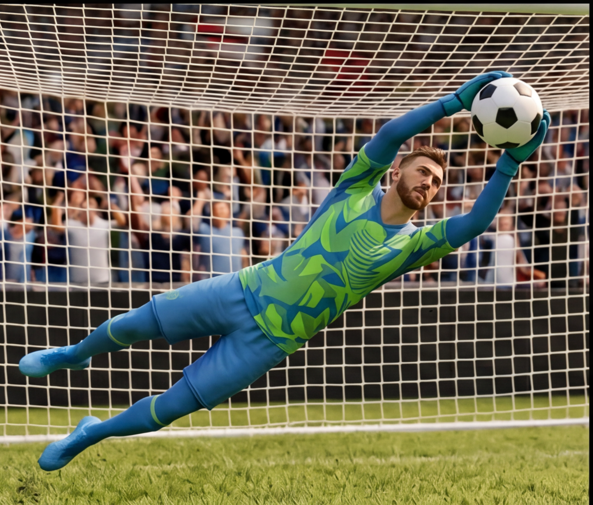

Смотри на траекторию мяча и нажми удар в нужный момент
Ты повторил легендарный гол Робина ван Перси в матче Нидерланды — Испания на ЧМ-2014: дальняя передача, прыжок и точный удар головой в ворота
Тебе доступен бонус

Ты немного не попал в тайминг. Попробуй ещё раз или выбери другое испытание
